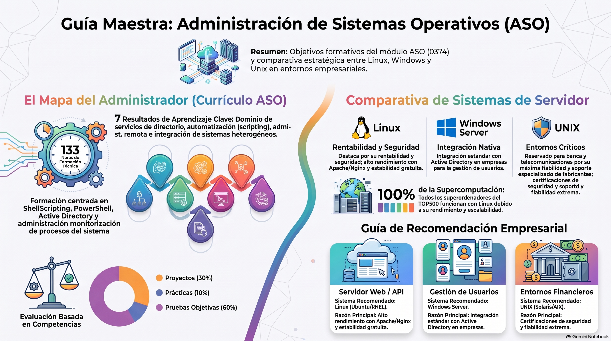

ASO2 · Administración SO
Materiales actualizados el 15/10/2026
General
Portada

Planificación Temporal Orientativa
Módulo: Administración de Sistemas Operativos (133h totales)
1ª Evaluación (Semanas 1 a 11)
45 horas lectivas en el aula. Bloques enfocados en automatización, acceso y gestión de usuarios.
Scripting
- 1. ShellScripting
- 2. PowerShell
Acceso y Directorio
- 3. Servicios de acceso remoto
- 4. Servicios de directorio
2ª Evaluación (Semanas 12 a 22)
43 horas lectivas en el aula. Antes de la salida a la empresa.
Integración
- 5. Integración de Sistemas
Administración
- 6. Administración de Procesos del Sistema
- 7. Automatización y monitorización
- 8. Administración de Servidores de Impresión
Programa de Empresa (Semanas 23 a 32)
El alumnado abandona el centro educativo para incorporarse a su puesto formativo.
FEOE / Formación FP Dual
- Desarrollo práctico de competencias en un entorno laboral real.
- Duración: 10 semanas (compensando las 45 horas restantes de la carga lectiva anual).
- Evaluación y seguimiento a cargo del tutor de empresa y el tutor del IES.
Mapa General de Unidades y Resultados de Aprendizaje
Unidades de Trabajo RA1 RA2 RA3 RA4 RA5 RA6 RA7 1. ShellScripting X 2. PowerShell X 3. Servicios de acceso remoto X 4. Servicios de directorio X 5. Integración de Sistemas X 6. Administración de Procesos del Sistema X 7. Automatización y monitorización X 8. Administración de Servidores de Impresión X Total - 133 h X X X X X X X Porcentaje 20% 10% 10% 10% 10% 20% 20%
Apuntes
- 📄Inicio/ Preparación comando Linux HTML · 63 KB · 18/09/2026
- 📄ASO EVALUACION INICIAL HTML · 18 KB · 18/09/2026
- 📄Guía VirtualBox V7 HTML · 5,0 MB · 05/10/2026
- 📕Minichuleta de Comandos linux y Windows PDF · 14 KB · 05/10/2026
- 📄instalacion basica windows 11 pro HTML · 15 KB · 15/10/2026
- 📄instalación basica windows server HTML · 23 KB · 15/10/2026
Bloque 0 Presentación
Apuntes
- 📕La Evolución de LA Infrastructura IT PDF · 18,9 MB · 11/09/2026
- 📕De la Maquina Fisica Alcontenedor PDF · 15,8 MB · 11/09/2026
- 📕Despliegue PDF · 12,9 MB · 11/09/2026
- 📕ASO-ARQUITECTURA, DESPLIEGUE Y DOMINIO PDF · 2,6 MB · 11/09/2026
Prácticas
- 📕Actividad practica Arquitecturas Modernas PDF · 1,1 MB · 11/09/2026
Bloque 1 Scripting
Unidad de Trabajo: Shell Scripting
Automatización y Administración de Sistemas
El shell scripting es una técnica que permite crear scripts —archivos de texto con instrucciones— para automatizar tareas y procesos repetitivos mediante un intérprete de comandos, como Bash. Es especialmente útil en sistemas operativos basados en Unix y Linux, donde facilita la administración del sistema, la ejecución de rutinas y la integración de herramientas.
Estos scripts no se compilan, sino que se ejecutan línea por línea por el shell, permitiendo realizar desde la manipulación de archivos hasta la ejecución automática de programas complejos.
1. Contenidos de la Unidad
Sesión 1 - 2Bloque 1: Fundamentos
- ¿Qué es un shell? CLI vs GUI.
- Formato general de órdenes en GNU/Linux.
- Comandos básicos de terminal.
- Creación y ejecución: permisos y
$PATH. - Comentarios y buenas prácticas.
Sesión 2 - 3Bloque 2: Elementos
- Variables y parámetros (
$0, $1, $#, $*, $?). - Entrada/salida con
echoyread. - Operadores: aritméticos, relacionales y lógicos.
- Cálculo con
lety expansión aritmética$(( )).
Sesión 3 - 4Bloque 3: Control de flujo
- Condicionales:
if, elif, else, case. - Bucles:
for, while, until. - Instrucciones
break, continue, exit.
Sesión 4 - 5Bloque 4: Modularización
- Vectores (arrays) y recorrido.
- Funciones, parámetros y retorno.
- Uso de
sourcey organización del código.
2. Actividades Iniciales: Calentamiento
Antes de empezar a programar scripts, vamos a refrescar los comandos básicos del sistema. ¿Sabrías resolver estos retos en la terminal?
- Introduce el comando para mostrar tu ubicación actual en el sistema.
- Introduce el comando para listar los archivos y directorios en tu ubicación actual.
- Introduce el comando para crear un archivo vacío llamado
prueba.txten tu ubicación actual. - Introduce el comando para cambiar al directorio raíz del sistema.
- Introduce el comando para crear un directorio llamado
nuevo_directorioen tu ubicación actual. - Introduce el comando para eliminar el directorio
nuevo_directorioque creaste anteriormente. - Introduce el comando para mostrar el contenido del archivo
/etc/passwd. - Introduce el comando para contar las líneas de un archivo llamado
prueba.txt. - Introduce el comando para buscar la palabra "root" en el archivo
/etc/passwd.
alumno@asir:~$
Apuntes
- 📕Tutorial de programación bash PDF · 2,6 MB · 10/09/2026
- 📄Teoria Procesos HTML · 17 KB · 18/09/2026
- 📄Repaso basico de Linux HTML · 63 KB · 17/09/2026
- 📄Teoria Automatización HTML · 13 KB · 18/09/2026
- 📄Powershell y cmd HTML · 62 KB · 24/09/2026
- 📄Aso Survival HTML · 58 KB · 25/09/2026
- 📄Aso Survival Powershell HTML · 74 KB · 25/09/2026
- 📄Scripts survival bash HTML · 132 KB · 25/09/2026
- 📄Survival Scripts2 HTML · 25 KB · 02/10/2026